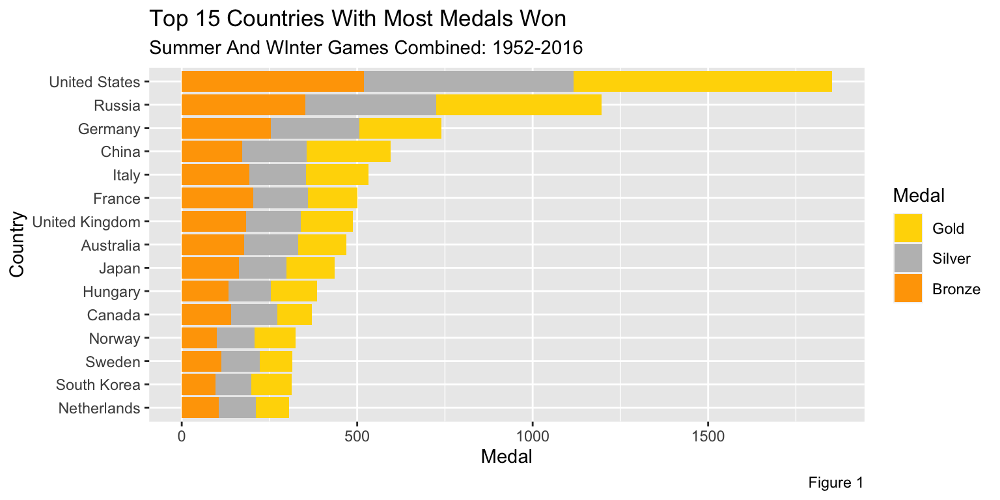
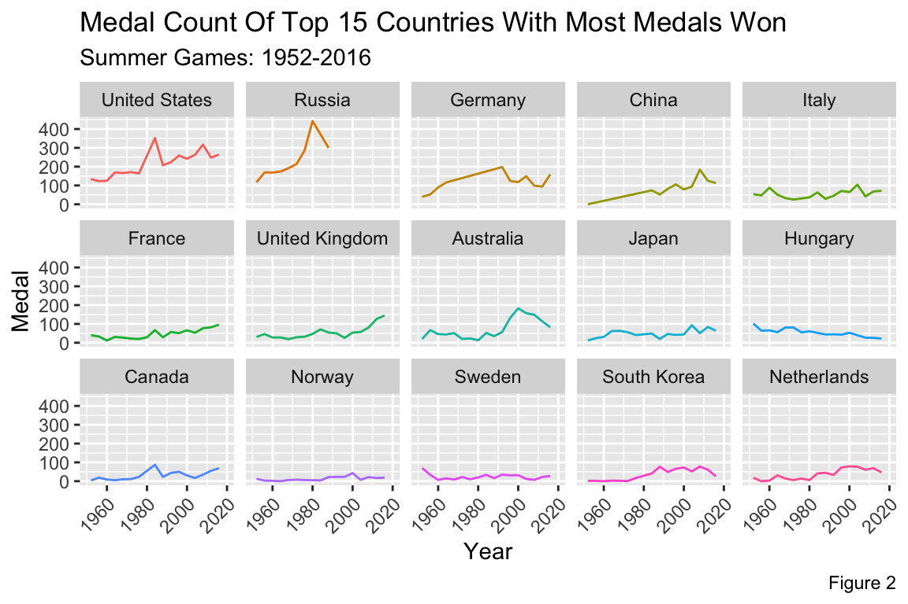
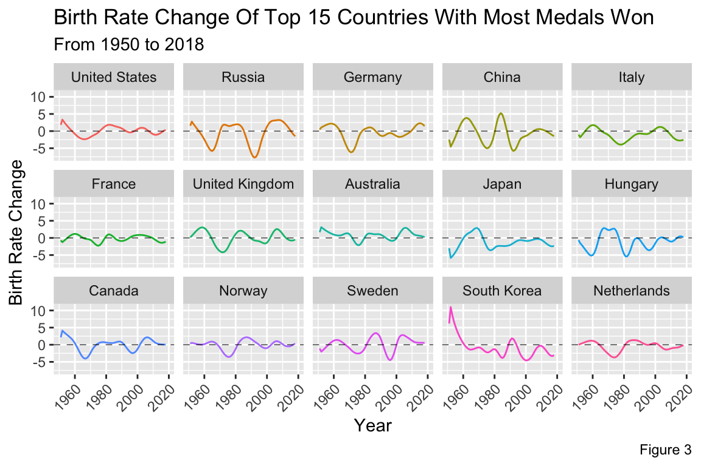

4 Analysis
To be able to observe and identify any trend or pattern of wining Olympic medals have on birth rates, countries with most medals won between 1952 and 2016 must first be identified.

In Figure 1, the fifteen countries, from top (United States) to bottom (Netherlands), have won the most medals between 1952 and 2016. The medal count includes both from Summer Games and Winter Games.
From observing the list, most countries are classified as developed or first-world countries. This suggests a strong economic power that goes into creating and training Olympic-medal-winning athletes.
This figure alone couldn’t display much about the influence of medals have on the birth rates of those countries, but by identifying the top 15 countries with most medals, examining the medal count and birth rate changes over the years would display the said influence. This leads to Figure 2 and Figure 3.

Note: Figure 2 only displays the Summer Games medal count due to the nature of the smaller medal count in Winter Games that would corrupt the trend line of the graphics.
Figure 2 display the number of medals won through the years of the top 15 countries identified above. For example, in 1956, the United States won 123 medals in total and in 2012, the US won 248 medals.

Figure 3 display the birth rate between 1950 and 2018 of the top 15 countries. For example, in 1955, the United States observed a 1.58% increase in amount of babies born compared 1954. France, in 1966, observed a decrease of 0.15% in babies born compared to 1965. The dashed line indicates 0% change in amount of babies born when compared to the previous year, meaning the the amount of babies born is the same as last year. 0% change doesn’t mean that no babies were born in that year.
Displaying the birth rate change, and not the population, coincides with the aim of this project to understand the numerical influence of winning medals has on the fertility of a country.
The top 1 most medals won country, United States, observed a sharp rise in medals won between 1972 and 1988, with peak in 1984 at 352 medals won that corresponds to the positive birth rates through the same time period.
Russia also displaying the same pattern between 1965 and 1980. As Russia’s medal count increases each year and peaked in 1980 at 442 medals, the birth rate sharply recovers from the negatives into the positives.
Although the trends observed are suggesting a positive correlation between the Olympic medal and birth rate, this doesn’t suggest any kind of direct causality of number of medals won to the birth rate fluctuations. This visualization of data didn’t take into control any of the external variables and/or possible influencing elements.
A prime example of this is the pattern displayed by South Korea, a country listed in the top 15 most medals won countries. Although the medal count is not as high as the top 3 countries, SK still has an increase in amount of medals won through the time period. Despite the rise in medals won, the country’s birth rate displayed a sharp decline from 10.99% in 1952 down to 3.09% in 2018.
##
## Table 1: All Countries Between 1950-2018
## =====================================================================
## Statistic Min Median Max Mean St. Dev.
## ---------------------------------------------------------------------
## Birth 1,142 142,803 30,563,425 692,441.200 2,576,547.000
## Birth Rate Change -9.10% 1.00% 43.70% 0.80% 0.023
## ---------------------------------------------------------------------##
## Table 2: Only Top 15 Medal Winning Countries
## =======================================================================
## Statistic Min Median Max Mean St. Dev.
## -----------------------------------------------------------------------
## Birth 50,085 720,106 30,563,425 2,337,133.000 5,615,660.000
## Birth Rate Change -7.70% -0.20% 11.00% -0.40% 0.021
## -----------------------------------------------------------------------##
## Table 3: Excluding Top 15 Medal Winning Countries
## =====================================================================
## Statistic Min Median Max Mean St. Dev.
## ---------------------------------------------------------------------
## Birth 1,142 125,914 27,907,631 540,154.900 2,015,501.000
## Birth Rate Change -9.10% 1.10% 43.70% 0.90% 0.022
## ---------------------------------------------------------------------Table 1 display the summary statistics of birth and birth rate change of all countries between 1950 and 2018.
Table 2 display the summary statistics of birth and birth rate change of only top 15 medal winning countries found above.
Table 3 display the summary statistics of birth and birth rate change of all countries between 1950 and 2018 excluding the top 15 countries.
Although no conclusion can be derived about the influence of the Olympic medal has on birth rate, overall performance of countries in the top 15 and not in the top 15 can be compared by observing the summary statistics of the birth data.
Both median and mean birth of top 15 countries are higher than countries outside of the top 15 list. The median amount of children born each year between 1950 and 2018 for top 15 most medals won countries is 594,192 higher than other countries. This effectively raised the median of all countries to 142,803 from 125,914.
The mean amount of children born each year between 1950 and 2018 for top 15 countries is 1,796,978 higher than other countries. Although China and India are the biggest factor that hasn’t been taken into control as the top 2 countries high highest population increase, it can still be said that the top 15 countries raised the global mean number of children born each year from 540,155 babies to 692,441 babies.
This can be said that top 15 countries with most medals won contributed to increase in global average of babies born each year. However, this doesn’t mean that the medals are the reason for the increase in the number of babies born each year. A possible different interpretation for this is due to the fact that the top 15 countries have a high level of development, they can produce more babies and consequently, higher chance of creating Olympic-level athletes.
A peculiar observation to note is that the birth rate change of top 15 countries are at -0.40% and other countries are at 0.90%. This consequently lowered the global birth rate change average from 0.90% to 0.8%. Although this is a small deviation of numerical value, it could be a possibility that the birth numbers of top 15 countries are decreasing slowly compared to the other countries.
A possible reasoning for this is the populations belonging to the already developed countries are having less sex, which leads to lowering of youth population. In contrast to the developing countries, the populations, while experiencing the increase in quality of life from economic developments, are more willing to reproduce and birth more children5.